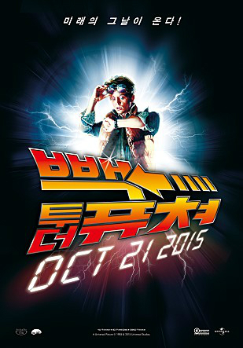
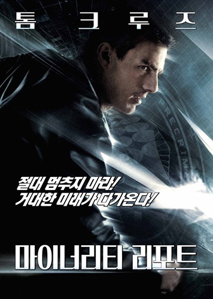
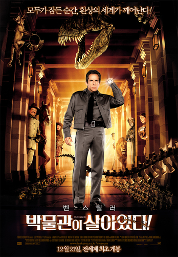
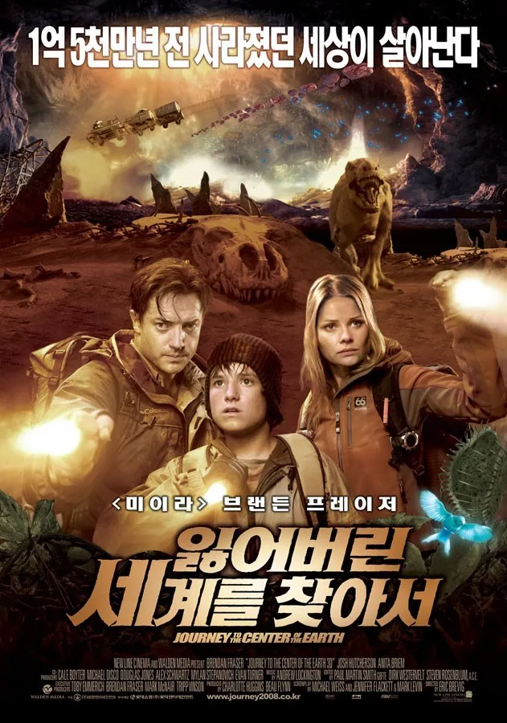
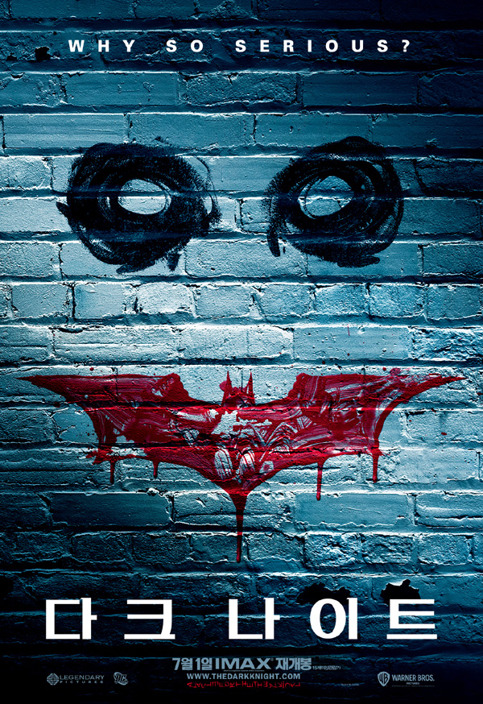

| 순위 | 제목 | 포스터 | 줄거리 | 바로가기 |
| 1 | 백 투 더 퓨쳐 |  | "백 투 더 퓨쳐"는 청소년 마티와 미친 발명가 독립심이 함께 하는 시간 여행 모험을 다룬다. 우연히 1950년대로 돌아간 마티는 부모 세대와 마주치게 되며, 과거와 현재의 운명을 위협하는 위험에 직면한다. | 클릭 |
| 2 | 마이너리티 리포트 |  | "마이너리티 리포트"는 예측범죄방지 시스템의 오류로 주인공이 평범한 사람으로 예측되면서 의문과 갈등에 빠지는 이야기를 담고 있다. 주인공은 이를 막기 위해 싸우며 자신의 정체성과 자유를 찾아가는 여정을 그린다. | 클릭 |
| 3 | 박물관이 살아있다! |  | "박물관이 살아있다"는 박물관에서 일어나는 신비로운 모험을 다루는 영화이다. 박물관이 밤에 살아나며 역사 속 인물들과 다양한 캐릭터들이 현실로 돌아와 혼란을 일으키지만, 주인공 래리는 이들을 다시 잠재워야 하며 그 과정에서 우정을 형성한다. | 클릭 |
| 4 | 잃어버린 세계를 찾아서 |  | "잃어버린 세계를 찾아서"는 실종된 아버지를 찾으러 여행을 떠나는 이야기이다. 주인공은 아버지의 흔적을 따라 우주 여행을 하며 용기와 힘을 발견하고, 가족의 소중함을 깨닫게 된다. | 클릭 |
| 5 | 다크 나이트 |  | "다크 나이트"는 배트맨과 조커의 대립을 그리는 액션 스릴러 영화이다. 배트맨은 조커의 테러를 막기 위해 고담 시티를 지키며, 조커는 혼돈을 일으키며 도시를 위협한다. 이들의 대결에서 도덕적 딜레마와 복수의 고민이 고스란히 담겨 있다. | 클릭 |